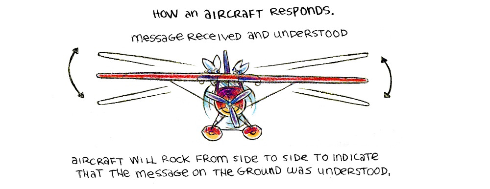

Ground to air signals. When one needs to communicate with an aircraft from the ground, it is easier to draw one symbol than to spell out an entire sentence.
The below symbols are understood by all aircraft pilots.
I : Doctor required (serious injury. X : Unable to proceed (need assistance). II : Medical supplies required. F : Food and water required. Box shape : Map and compass required. Up arrow : Proceeding in this direction. V : Assistance required. K : Indicate direction to proceed. Triangle : Safe to land here. LL : All is well. N : No. Y : Yes. Backward L and L: Don't understand. L : Need fuel and oil.
The main symbols to remember are V, X, N, Y and up arrow.
Draw the symbols on the ground, form them using objects (branches, logs, leaves) or by trampling down into snow, soil, or sand, or by bending crops or tall grass.
Write or form the symbols in a way that they contrast with the natural background (ex: dark branches, or leaves, on white sand).
Make the symbols at least 4 m (13 ft) tall and 6 m (20 ft) long to ensure that they are visible from the air.
Body signals.
When the aircraft is near enough and that the pilot can see you clearly, it then becomes possible to use your body to communicate.
![A rabbit standing with its left arm extended outward. A rabbit crouching and pointing to the left with both arms. A rabbit standing with both arms extended outward. A rabbit standing while pointing up with the left arm. A rabbit pointing up with both arms. A rabbit is standing and moving the left arm from up to the left in an arc. A rabbit is standing and waving a piece of fabric up and down. A rabbit standing and waving a piece of fabric from left to right. A rabbit standing and waving both arms from left to right. A rabbit standing with hands on their head near their ears. A rabbit lying on the ground.](../media/content/2024_aircraft_05.jpg)
Can proceed shortly, if possible wait. Land here (point in desired direction). Need mechanical help or parts. All ok, do not wait. Pick us up; aircraft abandoned. Use drop message. Affirmative (yes). Negative (no). Do not try to land here. Our receiver is operating. Need medical assistance urgently.
How an aircraft responds.
Message received and understood.
Aircraft will rock from side to side to indicate that the message on the ground was understood.
Message received but not understood.
Aircraft will make a full right-hand circle to indicate that the message on the ground was not understood.
At night, the aircraft will make green flashes with a signal lamp to communicate that the message was received and understood. It will produce red flashes if it isn't understood.
Panel signals.
Whether on a boat, or on land, it is possible to signal to passing aircraft by folding a tarp, blanket, or some other fabric, in a specific way to form symbols.
![A list of square blankets folded in a variety of ways. 1: blanket folded to form an arrow. 2: all 4 corners of a blanket folded to make a +. 3: top right and bottom left corner folded and touching in the middle. 4: the top right corner of a blanket folded to touch the middle. 5: The two top corners and the bottom right corners folded but not to the center. 6: Blanket folded in two diagonally. 7: blanket folded in 3s from the top, with 2/3rds visible. 8: Top and bottom edge of the blanket are folded, with a wide band visible in the center. 9: the two top corners are folded but not touching the center. 10: The top half of the blanket is folded so that the top right corner touches the bottom of the blanket. 11: The two bottom corners are folded but dont touch the center, with the top folded down to form a T. 12: The top band of a blanket folded but not touching the middle, with the lower right corner folded but not touching the middle. 13: The blanket folded in half diagonally but inside out.](../media/content/2024_aircraft_10.jpg)
Sea and land: ok to land (arrow shows landing direction). Sea and land: need medical attention. Sea and land : Do not attempt to land. Land : Need gas and oil or plane is flyable. Sea and land : Need first air supplies. Sea and land: Need food and water. Land : Should we wait for rescue plane? Notify rescuers of my position. Land : Indicate direction of nearest city, sea : Indicate direction of rescue craft. Land : Need warm clothing, Sea : Need exposure suit or clothing indicated. Sea and land : Plane is flyable or need tools. Land : Need quinine or atabrine, Sea : Need sun cover. Land : Abandoned plane on land, walking in this direction, Sea : Drifting. Sea : Need equipment as indicated (signals follow).